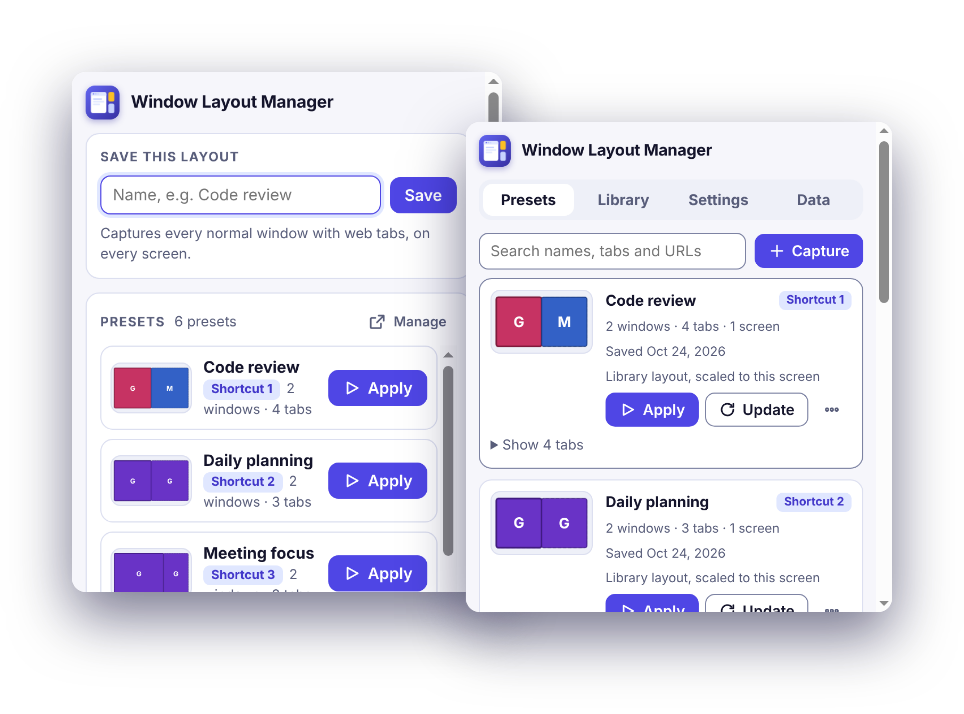
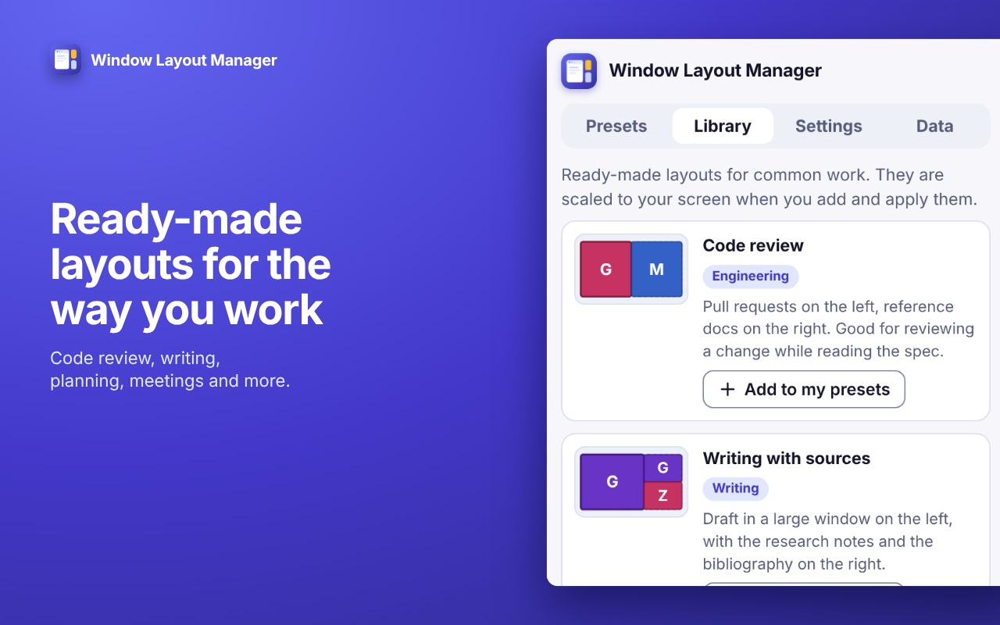
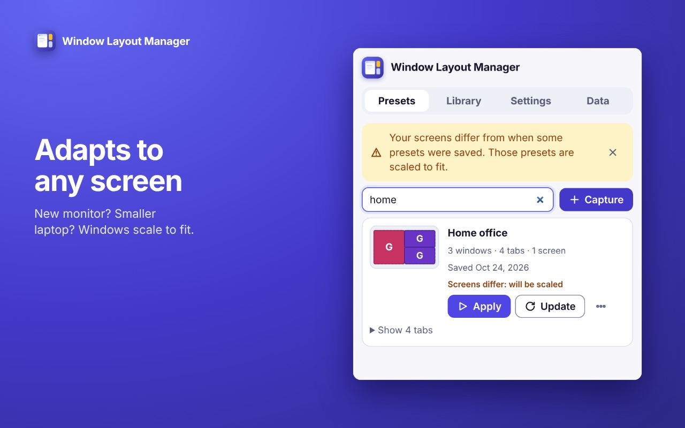
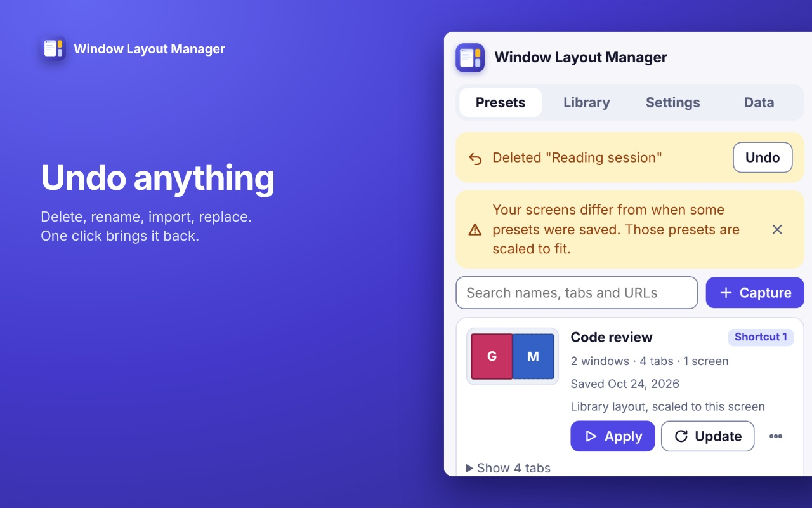
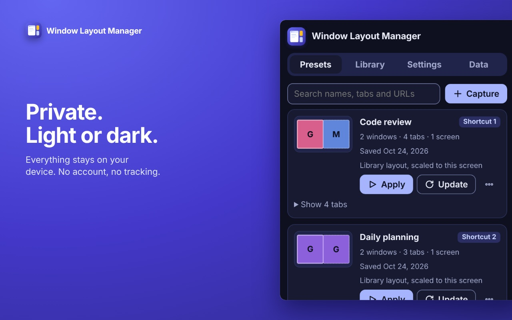

Your windows, exactly how you left them.
Save how your browser is arranged, and bring it back in one click. Wherever your screens are.
Free. No account. Works in Chrome 123 and later.

Made for the way you actually work
Save a layout, restore it in one click
Windows, tabs, pinned tabs, positions and the screen each window was on. Apply from the toolbar, the side panel or Ctrl+Shift+1, 2, 3.
Adapts to your screens
A different screen size or a missing monitor? Windows keep their place proportionally and always stay on screen.
Undo anything
Delete, rename, update, import, even a layout that closed your windows. One click brings it back.
Ready-made layouts
Start from code review, writing with sources, planning, presentations, reading or meetings, then make them yours.
Knows what you have open
It notices when your windows match a saved layout, offers to update it, and suggests a name from the sites you have open.
Private by design
Everything stays on your device. No account, no analytics, no tracking, no remote code.
Three steps
Arrange
Open the windows and tabs the way you work.
Save
Click the toolbar icon, name the layout, press Save.
Apply
One click, or a shortcut. Undo is always there.
A look inside




Questions
Does it send my data anywhere?
No. Layouts are stored in your browser on your device. The extension has no account, no analytics and makes no network requests of its own. See the privacy policy for the details.
Why does it ask for the "tabs" permission?
To read the address and title of each tab so it can save them, and to open tabs when a layout is restored. Without it the extension cannot know which pages are open. It never reads the content of a page.
What are the other permissions for?
"windows" reads and sets window position, size and state. "system.display" reads your screen layout so windows are placed on the right screen. "storage" keeps your presets and settings. "sidePanel" shows the manager in Chrome's side panel.
What happens to windows that are already open when I apply a layout?
You choose once: replace them, replace them but keep windows with pinned tabs, or add the layout alongside. Until you choose, nothing is closed, and Undo brings back anything that was.
Which tabs are saved?
Web pages (http and https). Browser pages, local files and extension pages are skipped, and a layout imported from a file is filtered the same way.
Is it free?
Yes.